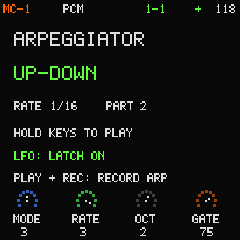
Six arpeggiator modes
Up, Down, Up-Down, Order, Random and Chord. Set rate, octave range and gate, then latch the phrase. PLAY + REC writes the generated notes into the sequencer.
1.2.0 / Engine rebuilt. Sound bank replaced.
Rebuilt LA-PCM.
112 new sounds.
A new LA engine and a completely replaced instrument bank. Real piano and guitar attacks. Phase-coherent synthesized sustain. The same four-part groovebox.
Original open-source firmware for the M-VAVE FM-1.
All 112 LA sounds rebuilt; the 16 Acid sounds, synthesized drums, eight melodic voices and four FX banks are retained. The installer also offers the original 1.0.2 single-core fallback.
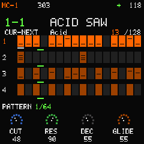
01 / Sound palette
Three melodic parts combine the rebuilt LA-PCM engine with a 303-inspired Acid engine. A fourth part brings 16 lanes of synthesized drums.
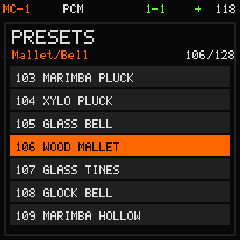
Version 1.2.0 replaces the entire LA bank: piano, nylon guitar, organ, mallets, harp, strings, woodwinds and brass. The 16 Acid sounds and eight synthesized drum kits are retained.
Real PCM attacks retain each instrument's character. Two phase-coherent harmonic frames synthesize the sustain without detuned beating or a repeated sample loop. This is LA-PCM, not a GM SoundFont player. All 24 source zones fit within the previous PCM budget.
Recordings come from Meta Open Sound and VSCO 2 Community Edition under CC0. Firmware and original patches remain GPL-3.0-only.
Browse the complete sound list ↗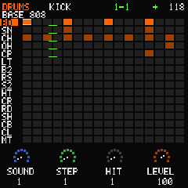
BASE 808 / CLUB 909 / TIGHT 606 / VINTAGE / HOUSE / BREAK JUNGLE / IRON WORKS / ELECTRO LATIN
Press play / Actual engine audio
Hip-hop piano, pop nylon guitar and chamber strings. Hear the rebuilt LA-PCM attacks and sustain, followed by two original full-groove demos.
Rendered by the native host engine, not recorded from an FM-1 or Roland device.
MC-1 — Hip-hop piano
Download hip-hop piano MP3 ↓MC-1 — Pop nylon guitar
Download pop guitar MP3 ↓MC-1 — Chamber strings
Download chamber strings MP3 ↓MC-1 — NIGHT CIRCUIT with FX
Download NIGHT CIRCUIT MP3 ↓MC-1 — NEON SPIRAL with FX
Download NEON SPIRAL MP3 ↓No autoplay. Playback starts when you choose.
02 / Shape the space
Each part has independent sends to R/D1, C/F1, R/D2 and C/F2: two reverb/delay banks and two chorus/flanger banks, each with eight types. ENV switches between sends and global types. Optional Analog variance adds subtle variation to melodic sounds. Version 1.2.0 improves wet level and ROOM/HALL separation. The master stays volume and limiter only.
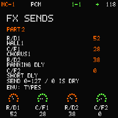
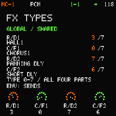
03 / Play it. Capture it.

Up, Down, Up-Down, Order, Random and Chord. Set rate, octave range and gate, then latch the phrase. PLAY + REC writes the generated notes into the sequencer.
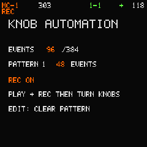
Turn a sound, level or FX knob during PLAY + REC to record its value at the current step. Refine an existing move or clear just the current pattern's automation.
04 / Stay in the groove
Orange shows the selection. Bright green follows playback. Slow turns stay precise; quick turns move through larger ranges faster.
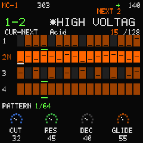
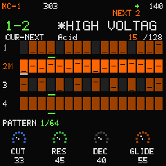
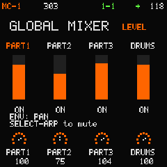
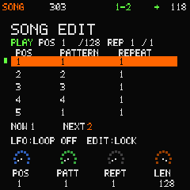
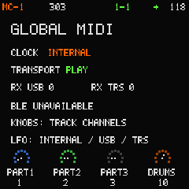
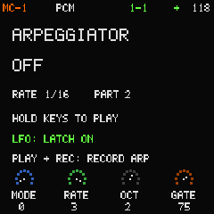
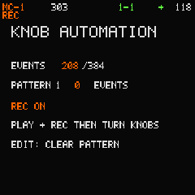
Open source / Open the instrument
The web emulator runs the shared C engine and display. Try the sounds, build a pattern and save your project.
Play the web emulator ↗